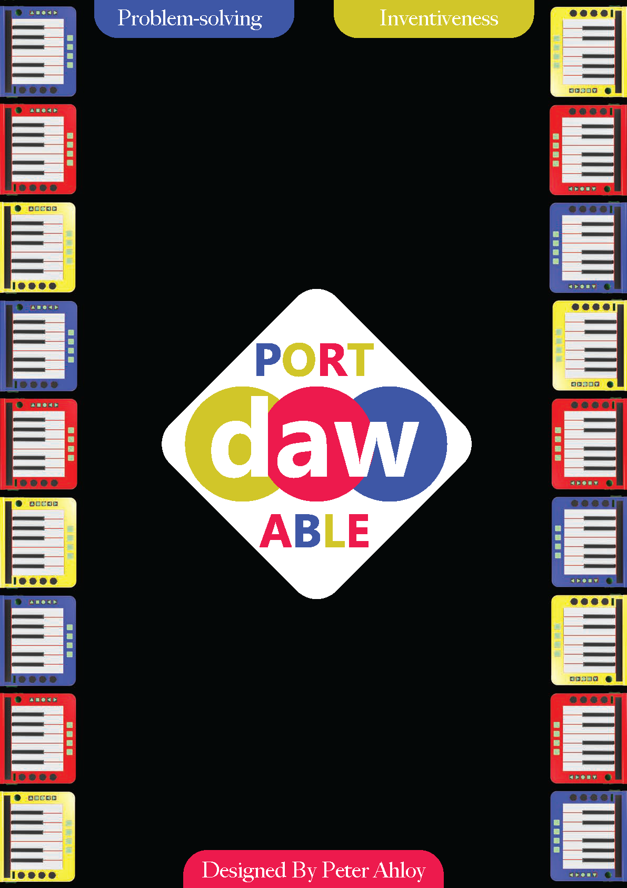
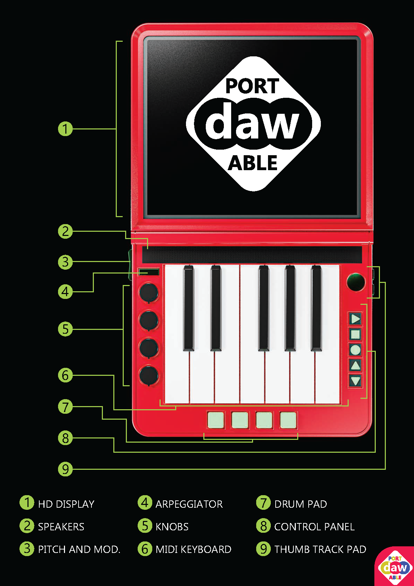
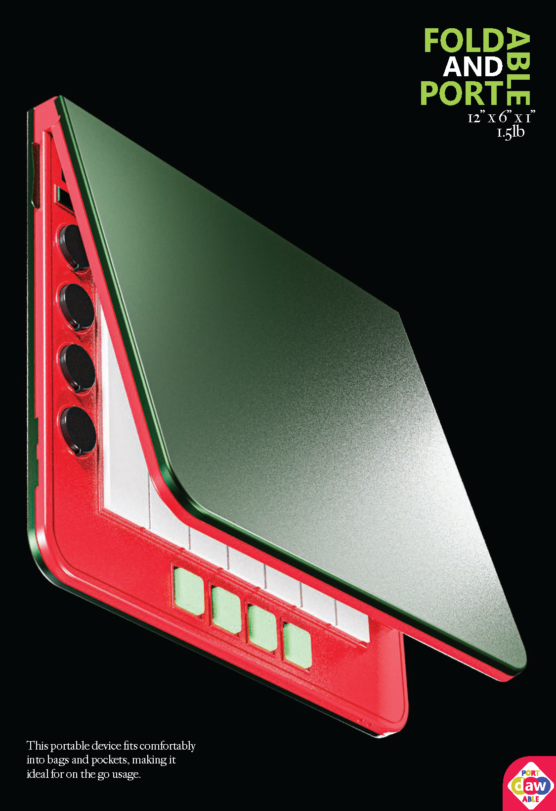
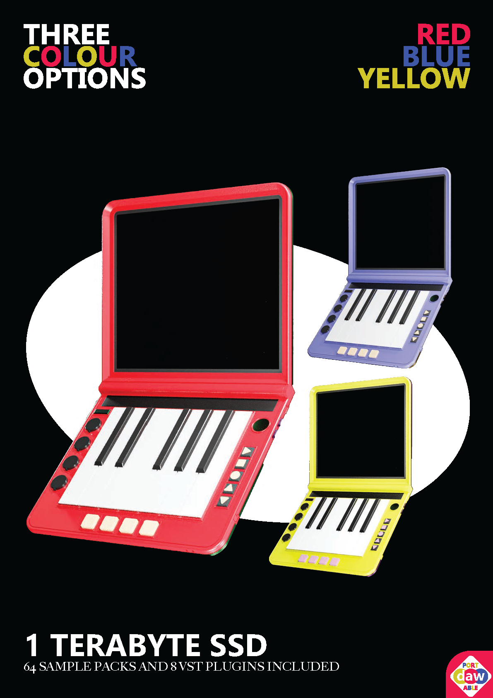

Portable DAW is a conceptual design for a compact digital audio workstation that enables users to compose and produce music on the go.
The device was modeled and rendered using Blender, with final presentation images refined in Photoshop and Illustrator.



